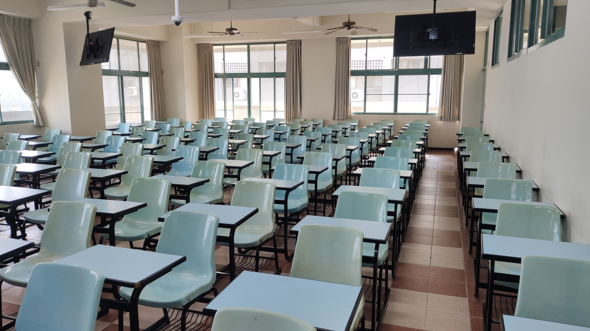
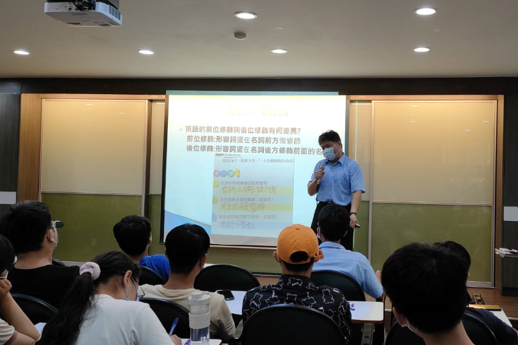

關於 CTL英語訓練中心
如何學好英文，文法佔了一個舉足輕重的地位。但台灣的英文老師卻把文法以記憶的方式教學， 造成許多學生認為一定要記憶力好才能學好英文。因為學習到最後會發現，隨著記憶量的增大， 內容的深入，會造成前面所記憶的文法會和之後學的文法相衝突，結果就是只能用『慣用語』 或者一大堆的『例外』再記憶。這就造成英文是少數人好的結果。
 如前位修飾與後位修飾有何差異性？詳請請點這裡
學習英文文法只能用死背的方式嗎?文法是文字記述，文字記述之邏輯。文法有其使用上不變之規則， 也有其運用上合理之變化。學習上偏重記憶缺乏理解，會對於理解型的學生造成很強的學習挫折感。
記憶是學習上必備之條件，但理解更是必備之利器。有邏輯性的記憶，才是有效的記憶；有邏輯性的學習 才是有效的學習。
CTL 英語學習中心是以英語文字邏輯為基礎，探討英文法形成之理論，協助同學拋開沉重的記憶式英文文法學習法； 再以口語化的發音通則，幫助同學口語發音的練習，可以流暢的講出英文句子，就不再聽不懂美國電影或者美國 影集中的英文對話了。英文閱讀和英文寫作是一體的兩面，幫助同學解析文章邏輯結構，再用相同文章的邏輯結構， 臨摹出相似的文章，經過持續練習，進一步再寫出個人風格的文章。 歡迎加入CTL英語學習中心，學習如何戰勝英文文法、流暢說出美語口語話的會話、增強英文聽力以及寫出一篇 通順且有邏輯性的文章。
Tyler Wang
英文老師用獨門的中文講解方式將英文文法中的重要邏輯解析清楚，理解中文和英文的邏輯差異， 縮短英文的學習過程，不再對英文感到害怕和恐懼。